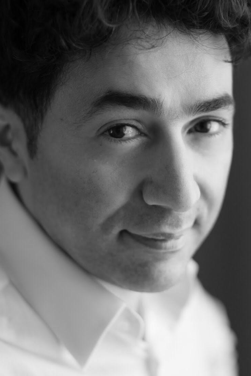
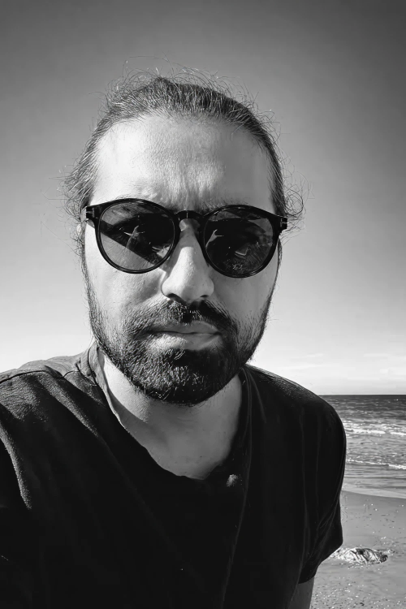
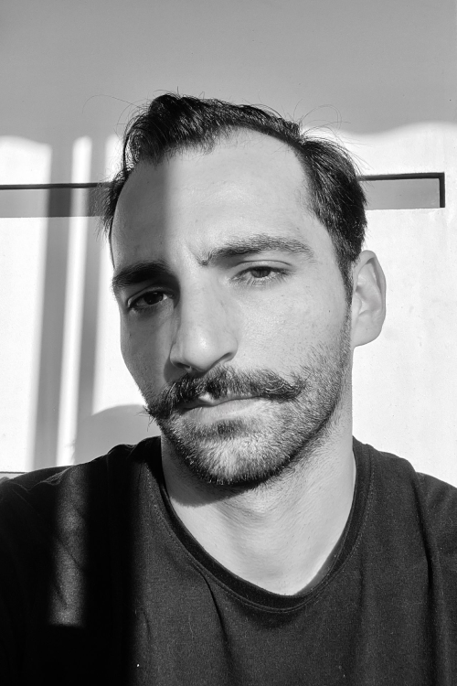
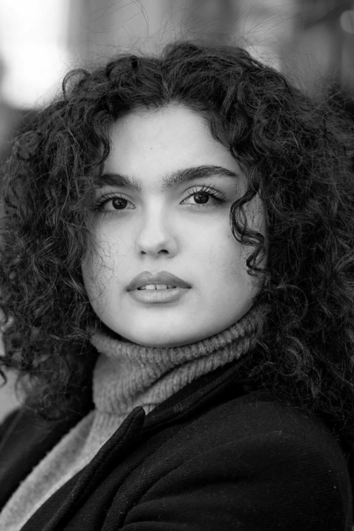

WE ARE A PRODUCTION COMPANY
FOCUSED ON PRODUCING
HIGH-QUALITY MOVIES AND
SHOWS
CONTACT US
ABOUT US
OYAN Production is a creative film studio dedicated to crafting powerful visual stories. We specialize in cinematic storytelling, branded content, commercials, and short films that connect emotionally and leave lasting impact.
From concept development to final cut, our team combines strategy, creativity, and technical precision to deliver high-quality productions tailored to each project's vision. We believe every frame should serve a purpose and every story should resonate.
THE TEAM

ELCHIN MUSAOGHLU
CO-FOUNDER, DIRECTOR, PRODUCER
Elchin Musaoghlu is an Azerbaijani film director known for his distinctive cinematic language and emotionally layered storytelling. His work often explores human resilience, social realities, and intimate character journeys. With a strong visual style and festival-recognized projects, he has become one of the notable contemporary voices in Azerbaijani cinema.

SANAN ISMAYILOV
CO-FOUNDER, CEO, EXECUTIVE PRODUCER
Sanan Ismayilov is the Co-Founder and CEO/Executive Producer of the company, bringing strategic vision and creative leadership to every project. With a strong background in film production and industry development, he plays a central role in shaping the organization's direction, overseeing projects from concept through to completion, and building meaningful partnerships within the film and media landscape.

AHMET TOKLU
DIRECTOR, PRODUCER
Ahmet Toklu is a Turkish film director and screenwriter born in 1987 in Istanbul, who graduated from the Film and Television Department of Çanakkale Onsekiz Mart University in 2011. His short and feature films have received numerous awards at national and international festivals. He has directed many television series, most recently Vefa Sultan (TRT, 56 episodes, 2025–2026), alongside commercials and social advertising campaigns for various brands and organizations.

OKAN AKGÜN
DIRECTOR, COLORIST, POST-PRODUCTION SPECIALIST
Okan Akgün is an Istanbul-based independent film director and post producer specializing in color grading, where he shapes the visual tone and atmosphere of projects. As a director, he focuses on character-driven, small-scale dramatic storytelling. His short films — including Bir Tabut İnsan, Güzel Havalar, and Akşam Yemeği — have screened at national and international festivals, earning multiple awards. He continues to contribute to film projects both as a director and post-production specialist.

MUSHKUNAZ USUB
MARKETING, PR & COMMUNICATION
Mushkunaz Usub is the Marketing, PR & Communication specialist responsible for shaping the public presence and brand identity of the company. With a keen understanding of media dynamics and audience engagement, she leads communication strategies, manages public relations efforts, and ensures that the company's projects and values are effectively represented across all platforms.
WHAT WE DO
OYAN Production is a creative film studio dedicated to crafting powerful visual stories. We specialize in cinematic storytelling, branded content, commercials, and short films that connect emotionally and leave lasting impact.
From concept development to final cut, our team combines strategy, creativity, and technical precision to deliver high-quality productions tailored to each project's vision. We believe every frame should serve a purpose and every story should resonate.
PROJECTS
NABAT
2014"Nabat" is one of Musaoghlu's most internationally recognized films. Set during the Nagorno-Karabakh war, the story follows an elderly woman who refuses to leave her deserted village. Through minimal dialogue and powerful imagery, the film explores themes of loneliness, resilience, and human endurance. It was selected as Azerbaijan's submission for the Academy Awards in the Best Foreign Language Film category.
THE 40TH DOOR
2009"The 40th Door" tells the story of a young boy growing up in post-war Baku. The film portrays childhood struggles, poverty, and dreams within a harsh social reality. With its poetic yet raw storytelling, the film gained international festival attention and established Musaoghlu as a strong voice in Azerbaijani cinema.
OVSUNCHU (THE SORCERER)
2002"Ovsunchu" is a mystical drama blending folklore elements with psychological tension. The film explores tradition, belief, and rural life through symbolic narrative and atmospheric cinematography. It became one of Musaoghlu's early notable works, showcasing his distinctive visual style.
YALAN
2006"Yalan" (meaning "Lie") focuses on moral conflict and personal choices within contemporary Azerbaijani society. The film reflects on truth, deception, and social pressure, presenting emotionally layered characters and subtle dramatic tension.
SILHOUETTE
2005"Silhouette" is a psychological drama centered on identity and internal struggle. Through carefully composed frames and restrained storytelling, Musaoghlu examines personal transformation and human vulnerability.